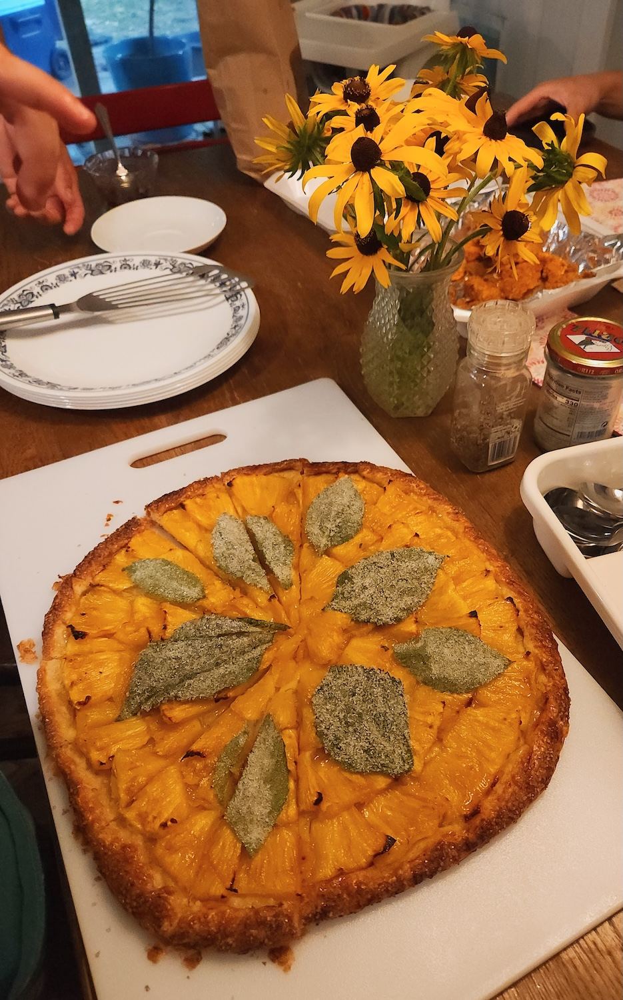

Pineapple Perilla Galette
deliciously bright
Ingredients & Steps
one 14" round galette / six 6" rounds
sugared perilla
( Reserve leftover egg white for egg wash )
Brush perilla with a thin layer of egg white on both sides
Coat perilla with sour sugar mixture, pat, then shake off excess
Transfer to wire rack
Dry for 12+ hours
galette dough
Using a bench knife, chop butter into flour
Using a fork, toss remaining butter in the flour
Gradually drizzle and toss coconut oil into flour
Add water 1 tbsp at a time until dough begins to clump
Gently knead/press the dough and separate hydrated dough onto saran wrap
Hydrate the remaining flour and add to the dough pile
Wrap the dough and flatten into a disc
Refrigerate until firm (2+ hours)
galette assembly
Remove from fridge and rest at room temperature for 5 minutes
Prepare parchment paper
Laminate dough
Roll until 1/8" thick
Massage lime zest into sugar
Evenly sprinkle over dough
Fold edges of the dough
Chill in fridge momentarily
Preheat oven
• 14" round : 425°
• 6" rounds : 400°
( Save pineapple scraps for glaze )
Cut the pineapple into six sections (eight sections for mini galettes)
Cut 1/4" slices
Arrange and overlap pineapple onto the crust
Finish the edges with egg whites and sugar
Bake until the entire crust is deeply golden with dark spots
• 14" round : 40+ minutes
• 6" rounds : 20 minutes then increase heat to 425°
Cool for 5 minutes
( While galette is baking, make the glaze )
glaze
Bring to a boil
Simmer until pineapple has cooked down and about 2 oz of liquid remains
Filter syrup
Stir to combine
Transfer baked galette to wire rack and remove parchment paper
Cool until only slightly warm or room temp
Brush a thin but thorough layer of glaze over the pineapple
final touches
Right before serving, arrange perilla
Best eaten the day it’s made
Sources
Natasha Pickowicz : More Than Cake : Pineapple Tile Galette
Natasha Pickowicz x Claire Saffitz how to make pie doughNotes
- Pair with tea or ice cream
August 2025